TH-F-000020
TH｜多巴胺
雌
3D 旋轉繞 Y 軸｜36 格
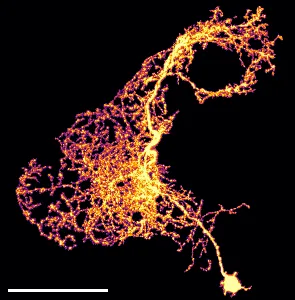
XY沿 z 軸投影｜276×298
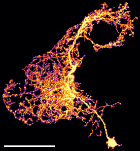
XZ沿 y 軸投影｜276×163
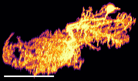
ZY沿 x 軸投影｜163×298
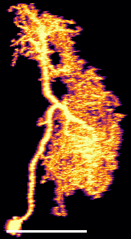
FCdata/neurons 的 20 個 FlyCircuit 體積影像（.am），
每個神經元以一段繞 Y 軸的旋轉動畫 + 三個正交方向的最大強度投影呈現。
原始檔是 AmiraMesh 格式的 3D 灰階體積：純文字檔頭 + zlib（HxZip）壓縮的
16-bit 資料，數值範圍 0–4095。神經元本體只佔 0.5%–4% 的 voxel，其餘皆為 0。
因為結構稀疏又是立體樹狀，單看任何一張切片都只會切到零星幾段，所以改用 最大強度投影（Maximum Intensity Projection, MIP）：沿著某一軸，取每條射線上的最大值， 把整個立體壓成一張圖。三個方向合起來就能還原神經元的立體走向。
影像處理：以非零值的 99.5 百分位當白點，再套 gamma 0.5 提亮暗部（否則只看得到主幹、 看不到細突起），最後用 inferno 色階上色 —— 亮黃 = 訊號強，紫黑 = 訊號弱。 左下角白色橫棒 = 100 voxel。
第一欄「3D 旋轉」：繞 Y 軸（畫面的垂直方向、通過影像檔正中央）旋轉一圈， 每 10 度一格共 36 格。靜態投影會把立體結構壓扁，看不出前後關係；轉起來之後， 人眼會自動從運動視差還原深度。這也是繞開下面那個解析度問題最有效的辦法。
後三欄：XY＝沿 z 軸投影、XZ＝沿 y 軸投影、ZY＝沿 x 軸投影。 三張圖是同一塊裁切區域，所以同一條神經元的三視圖彼此對得起來。
為什麼 XZ 和 ZY 看起來比較糊？不是繪圖的問題，是資料本身：共軛焦顯微鏡的 點擴散函數在光軸（z）方向是拉長的，軸向解析度比橫向差 2–3 倍。實測這批資料沿 z 的 自相關要走 1.5–2.2 倍的距離才掉到一半，代表同一個結構沿 z 被抹開成約兩倍寬。 XY 是唯一不含 z 軸的視角，所以最銳利；旋轉動畫轉到側面時同樣會變糊，屬正常現象。
需要注意：這裡的 X／Y／Z 是資料座標軸，還沒對應到解剖學上的前後／背腹／左右。 要標成「正面觀／水平觀／矢狀觀」必須先確認這批標準腦的軸向定義，尚未查證。




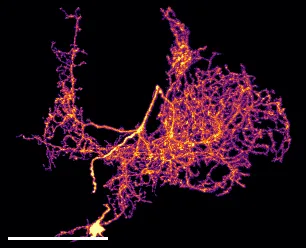
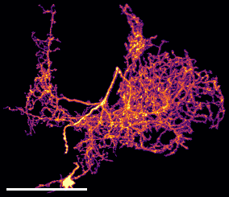
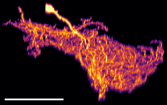
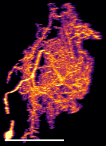
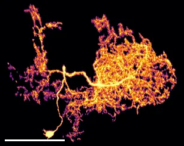
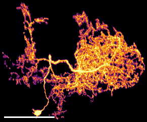
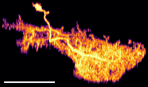
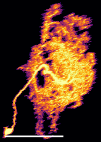
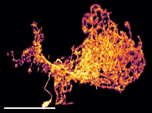
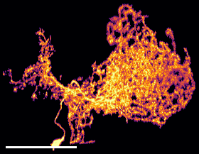
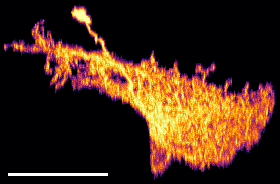
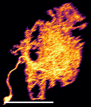
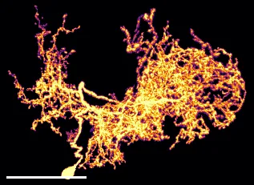
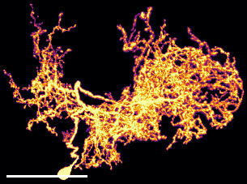
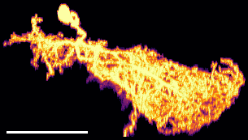
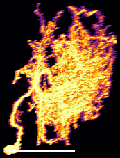
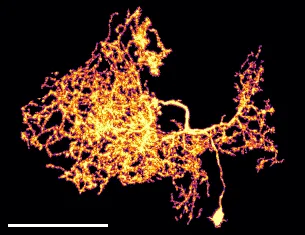
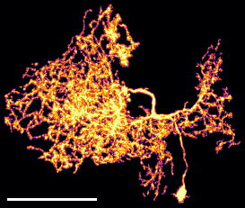
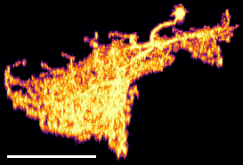
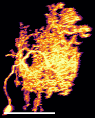
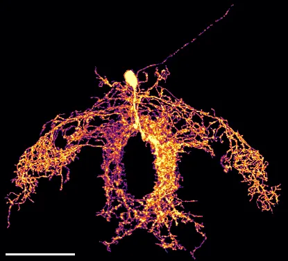
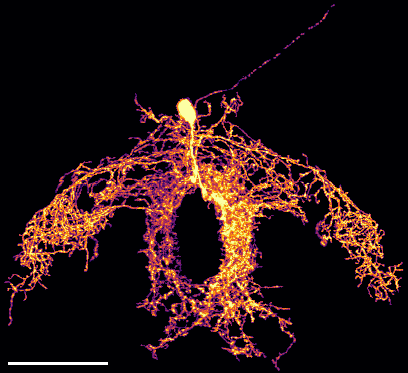
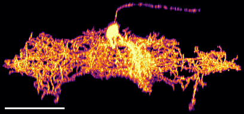
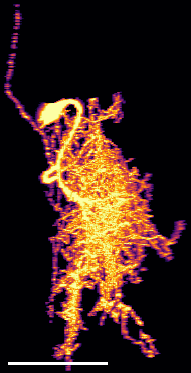
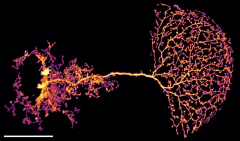
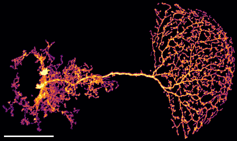
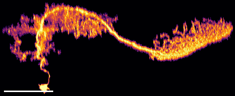
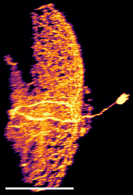
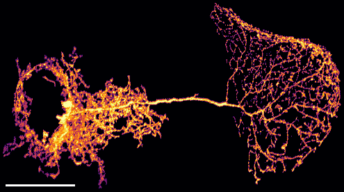
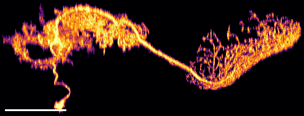
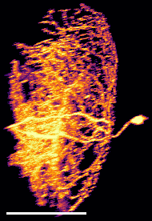
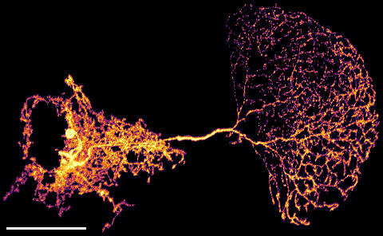
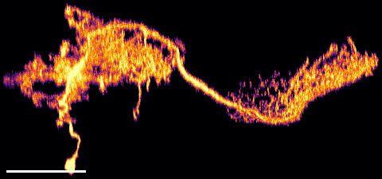
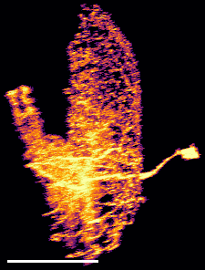
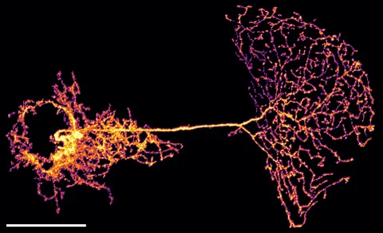
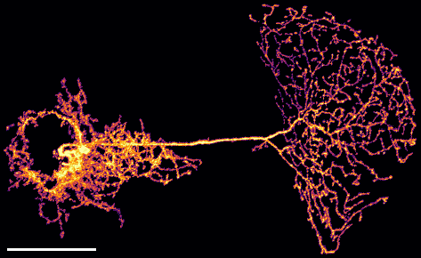
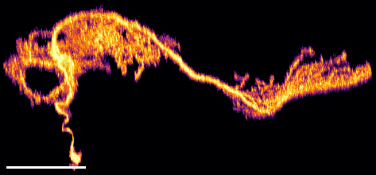
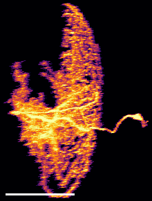
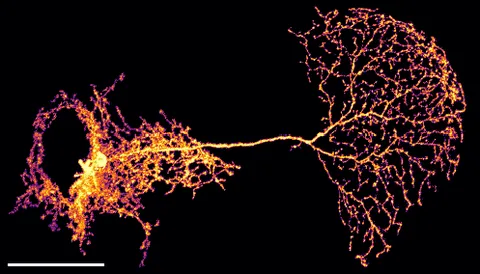
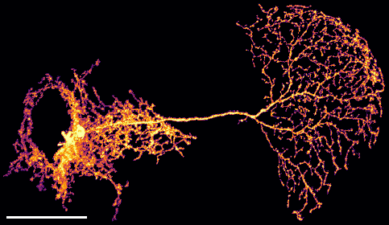
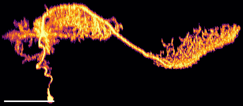
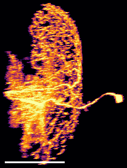
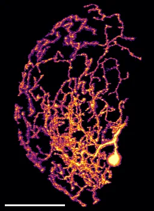
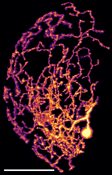
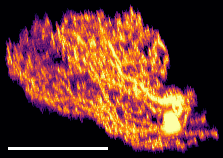
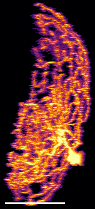
資料來源：FlyCircuit *_seg001_warp_volume.am；
由 render_mip.py + build_page.py 產生。